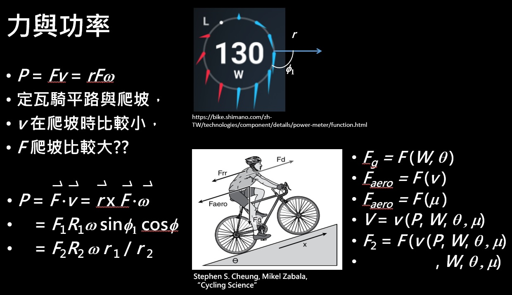

從瓦數 坡度 踏頻和曲柄長來選擇自己適合的齒比
2023 年還義剛結束，還義滿多變態的高山，也看到了今年的粉紅衫 Roglic 在最後的，皇后站與個人計時用了 40T 以上的小盤和飛輪，最後雖然有掉練，但還是成功逆轉拿下粉紅衫。 當他拿下粉紅衫之後就有人認為，PRO 都用這麼大了，那一般人是不是要更大，所以我們就來看一下齒比到底要多大比較好。 自行車其實就是個簡單機械，主要由輪軸和鏈條所組成傳動系統，其中鍊條每一目的長度 p 幾乎是一樣的，所以我們就可以得到齒數與半徑的關係，所以齒輪的齒數就會跟齒輪的半徑成正比，列下力學等式把兩式相除就可得到齒比。 從功率來計算踏頻跟齒比的關係，功的定義是施力與施力位移的內積，所以實際上功率跟施力還有踏頻的關係是，力臂跟施力先做外積 再跟踏頻做內積，再用我們前面得到的關係帶換掉，就可以得到功率與齒比和踏頻的關係了。當然這個功率還會跟當下的環境有關，例如總重、速率、坡度跟滾阻等許多變數，當然你能騎多快，又跟你的瓦數和重量跟坡度有關，所以實際解起來倒是沒這麼好解，可以參考一些數值方法去解出來。
這個功能目前也已經做在路段齒比計算機裡面，歡迎各位去使用，聯絡粉絲專頁購買點數 https://operftrain.com/author/customer_gearRatio
| 圖一 路段齒比計算機 https://operftrain.com/author/customer_gearRatio |
首先我們先來看齒比到底是怎麼計算的，自行車其實就是個簡單機械，主要由輪軸和鏈條所組成傳動系統，其中鍊條每一目的長度 p 幾乎是一樣的，所以我們就可以得到齒數與半徑的關係，所以齒輪的齒數就會跟齒輪的半徑成正比，列下力學等式把兩式相除就可得到齒比。所以大盤與曲柄是一個輪軸，輪組與飛輪則是另一個輪軸，大盤與飛輪用鏈條連接，其中鍊條每一目的長度 p 幾乎是一樣的，所以我們就可以得到齒數與半徑的關係，所以齒輪的齒數就會跟齒輪的半徑成正比。
因為輪軸是力矩相同，鍊條是受力相同，所以我們就可以分別列下力學等式，每個符號的代表意思如這表格所式，最後我們就把兩式相除就可得到齒比，這就是為什麼前面定義的齒比是大盤 / 飛輪的齒數，不過反正只要搞清楚左右邊是什麼就好了。
大盤曲柄：F1R1 = fr1
輪子飛輪：F2R2 = fr2
所以可以得到 F1R1 = F2R2 * r1 / r2，正比於 r1 / r2
| 人施力 F1… | 輪子受力 F2… | 大盤受力 f… | 飛輪受力 f |
|---|---|---|---|
| 曲柄長 R1… | 輪子半徑 R2… | 大盤半徑 r1… | 飛輪半徑 r2 |
那麼既然跟力有關，我們就要從功率來計算，一般在看網路上的資料時去查功率跟施力的關係，都會直接跟你講這個公式，然後說相同功率，踏頻越高施力會越少，反之則越大。這就會有一個很奇怪的點，當用相同瓦數騎平路跟山路時，一定是平路速率高，但是你帶進公式時，就會發現爬坡的施力會比平路大但都還是同瓦數。 所以實際上我們就要從定義來看，功的定義是施力與施力位移的內積，所以其實還跟兩者的夾角有關，另一個大家常誤解的就是三點鐘方向力矩最大，這也不一定，因為你不確定力跟力臂是否垂直。所以實際上功率跟施力還有踏頻的關係長這樣，力臂跟施力先做外積，再跟踏頻做內積，再用我們前面得到的關係代換掉，就可以得到功率與齒比和踏頻的關係了，當然這個功率還會跟當下的環境有關，例如總重、速率、坡度跟滾阻等許多變數，當然你能騎多快，又跟你的瓦數和重量跟坡度有關，所以實際解起來倒是沒這麼好解。
|  |
|---|
| 圖二 力與功率的關係 |
來看一下在某些條件固定下，不同坡度與瓦數的踏頻和齒比關係，總重量 73.3 kg
| 坡度 0% 瓦數 250 W | 坡度 8.2% 瓦數 200 W |
|---|---|
| 踏頻 60 rpm –> 齒比 50/10….. | 踏頻 60 rpm –> 齒比 34/25 |
| 踏頻 90 rpm –> 齒比 50/15….. | 踏頻 60 rpm –> 齒比 34/38 |
當然想增加踏頻，根據圖二的公式，還可以有以下的選擇
- 提高瓦數 P ↑
- 換短曲柄 r1↓
- 換小齒盤 r1↓
- 換大飛輪 R2↑
- 換小徑車 R2↓
當然公路賽事不可能去騎小徑車參賽的，而曲柄從 170 mm –> 160 mm，踏頻則是 60 rpm –> 64 rpm 變化不大，所以通常還是選擇改變齒比。
那麼想降低齒比，要換大飛輪還是壓縮盤比較好??大家會覺得壓縮盤會比大飛輪輕，所以壓縮盤會比較好，但實際上還要考慮到練輪系統的阻力。
降低齒比是為了增加踏頻 –> 傳動系統的耗瓦會增加
齒盤跟曲柄是輪軸關係 –> 轉的圈數相同 –> 圈數增加 –> 耗瓦增加
飛輪與齒盤以鏈條連接 –> 雖然踏頻變高，鍊條速率也會變快，但是因為飛輪尺數也增加了，所以轉速不一定會增加，摩擦力也不一定會增加。
所以換小齒盤會讓阻力稍微增加，但換大飛輪就不一定。
然而從重量上來看，若都是 12 速的飛輪與齒盤，若是考慮到尺速的綿密性，如果以前就是用 30T 的車友，換到 12 速的 11-34 就是多了片 34T 的齒片而已，從 30 換成 34 重量會多 50 g，而從 36 換成 34 重量則是會少 11 g，所以整體重量差異是差 66 g ，如果是爬武嶺 換小齒盤會比換飛輪均瓦少 0.2 W，所以應該是不會有綿密性的差異，但是多了一片救命齒可以用，所以整體來說還哪個都可以。